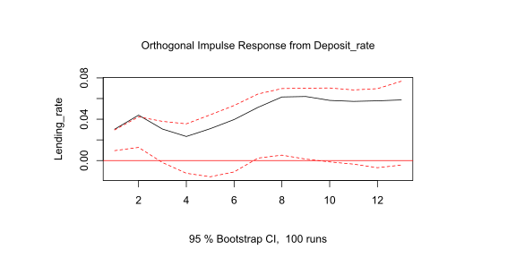
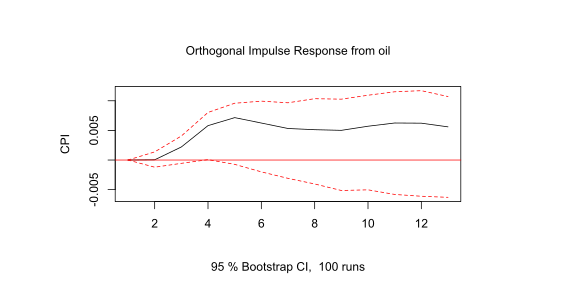

- Giới thiệu chung về rủi ro vĩ mô
- Lựa chọn mô hình phù hợp cho lãi suất
- Mô hình kinh tế lượng áp dụng đối với xu hướng dài hạn của lãi suất
- Xây dựng mô hình
- Ứng dụng
Duong T.Son, Le T.My
Suy thoái kinh tế xảy ra trung bình 10 năm 1 lần và khủng hoảng ngân hàng xảy ra trung bình 40 năm 1 lần.
Khủng hoảng tài chính Châu Á: Đồng Bath mất hơn 50% giá trị, thị trường chứng khoán giảm 75%, công ty tài chính lớn nhất Thái lan phá sản. Nợ xấu tại Hàn quốc tăng mạnh khiến 787 tổ chức tín dụng mất khả năng thanh toán, đồng won giảm gần 1 nửa giá trị thị trường.
Suy thoái kinh tế 2008-2013 tại Việt Nam: Lãi suất tăng mạnh do chạy đua tăng trưởng tín dụng; SBV liên tục phá giá VND (có thời điểm SBV phá giá 9.3% trong 1 ngày).
Mô hình dự báo chuỗi thời gian sẽ giúp dự báo các giá trị tương lai về một đối tượng dự báo nào đó trên nền tảng xu hướng vận động của chính chuỗi dữ liệu đó trong quá khứ và hiện tại.
Ngoài ra, các biến kinh tế thường có các mối quan hệ với nhau, và dựa trên các mối quan hệ đó mà chúng ta có thể suy luận được hành vi của một biến số nào đó khi đã có thông tin từ các biến số khác có liên quan.
Loại mô hình thường được sử dụng để dự báo các biến số kinh tế:
\(\Delta p_{t} = \kappa_{1}\Delta\epsilon_{t} + \kappa_{2}\Delta_p{t}^W + \kappa_{3}\Delta M_{t} + \kappa_{4}\Delta Y_{t} + \kappa_{5}\Delta r_{t} + \zeta_{t}\)
Trong đó:
Tồn tại sự tác động qua lại của các yếu tố vĩ mô nên mô hình trên có thể được dùng để phân tích và dự báo lãi suất, tỷ giá và tăng trưởng kinh tế.
Dữ liệu theo quý từ 2000 Q1-2016 Q3, bao gồm các biến:
Nguồn dữ liệu: Quỹ tiền tệ quốc tế, Tổng cục thống kê . Dữ liệu GDP giai đoạn 2000-2012 có năm gốc là 1994 được chuyển sang năm gốc 2010 dựa trên số liệu tăng trưởng GDP trong quá khứ.
Tỷ giá danh nghĩa đa phương (NEER): dựa trên bình quân hình học, tỷ trọng của các đồng tiền bằng tỷ lệ giao dịch thương mại của Việt Nam với 8 quốc gia (Mỹ, EU, Trung Quốc, Nhật Bản, Hàn Quốc, Thái Lan, Singapore, Đài Loan).
Để dự báo chính xác, chuỗi thời gian phải có tính dừng. Một chuỗi thời gian là dừng nếu trung bình, phương sai và tự đồng phương sai (tại các độ trễ khác nhau) sẽ giữ nguyên không đổi dù cho chúng được xác định vào thời điểm nào đi nữa.
| Variable | ADF | p-value |
|---|---|---|
| GDP | -0.7562 | 0.9608 |
| CPI | -1.9737 | 0.5858 |
| Credit | -0.6351 | 0.9713 |
| Deposit_rate | -1.1042 | 0.9149 |
| Lending_rate | -0.8989 | 0.9470 |
| Exchange_rate | -1.2675 | 0.8724 |
| oil | -0.6559 | 0.9695 |
Theo nghiên cứu nổi tiếng của Engle và Granger (1986), khi xét mô hình có nhiều biến số theo chuỗi thời gian, cũng có nhiều trường hợp, mặc dù các biến số là không dừng, nhưng khi thực hiện phép hồi quy hay tổ hợp tuyến tính của các biến này vẫn cho ra một chuỗi dừng. Trong trường hợp này, mô hình vẫn có thể ước lượng được mà không bị hiện tượng hồi quy giả mạo và mối quan hệ giữa các biến được gọi là quan hệ đồng liên kết.
| test | 10pct | 5pct | 1pct | |
|---|---|---|---|---|
| r <= 6 | | 10.23 | 10.49 | 12.25 | 16.26 |
| r <= 5 | | 32.20 | 22.76 | 25.32 | 30.45 |
| r <= 4 | | 56.05 | 39.06 | 42.44 | 48.45 |
| r <= 3 | | 83.86 | 59.14 | 62.99 | 70.05 |
| r <= 2 | | 128.07 | 83.20 | 87.31 | 96.58 |
| r <= 1 | | 186.17 | 110.42 | 114.90 | 124.75 |
| r = 0 | | 276.41 | 141.01 | 146.76 | 158.49 |
Mô hình ước lượng nhiều chuỗi dữ liệu là không dừng và đồng liên kết. Như vậy, mô hình VECM là phù hợp khi chúng ta có nhiều chuỗi thời gian khác nhau và cần phải xem xét mối quan hệ, tác động qua lại giữa chúng.
Mô hình được ước lượng bằng phương pháp OLS với bậc đồng liên kết bằng 2. Kết quả ước lượng bao gồm 7 phương trình tương đương với 7 biến số kinh tế.
ARCH (multivariate)
data: Residuals of VAR object vecm.level
Chi-squared = 1624, df = 3920, p-value = 1
Mô hình có thể tin tưởng được nếu kết quả cho thấy p-value > 0.01 (xác suất 99%). Phương sai của phần dư không thay đổi.
JB-Test (multivariate)
data: Residuals of VAR object vecm.level
Chi-squared = 26.962, df = 14, p-value = 0.01947
Mô hình có thể tin tưởng được nếu kết quả cho thấy p-value > 0.01 (xác suất 99%). JB test có kết quả p-value > 0.01. Do đó, ta chưa thể bác bỏ giả thuyết H0:chuỗi phần dư có phân phối chuẩn.
Portmanteau Test (asymptotic)
data: Residuals of VAR object vecm.level
Chi-squared = 815.05, df = 791, p-value = 0.2692
Kết quả p-value lớn hơn 0.01, do đó chưa có đủ cơ sở để bác bỏ giả thuyết H0: Không có tương quan giữa các chuỗi phần dư.
Khả năng dự báo của mô hình được kiểm định bằng 3 hệ số Trung bình sai số tuyệt đối (RMSE), Trung bình sai số tuyệt đối bình phương (MAE) và Phần trăm sai số tuyệt đối bình quân (MAPE),hệ số càng nhỏ, khả năng dự báo càng chính xác
Mô hình đưa ra dự báo đối với 4 quý tiếp (2015Q4-2016Q3) theo dựa trên dữ liệu từ 2000Q1-2015Q3, kết quả đo lường sai số như sau:
| Indicators | GDP | CPI | Credit | Deposit_rate | Lending_rate | Exchange_rate | oil |
|---|---|---|---|---|---|---|---|
| RMSE | 3057.20 | 3.37 | 212070.33 | 0.82 | 0.81 | 4.80 | 6.55 |
| MAE | 2842.39 | 2.83 | 205176.83 | 0.75 | 0.73 | 4.59 | 6.20 |
| MAPE | 0.38 | 1.90 | 3.63 | 15.11 | 10.53 | 6.54 | 15.69 |
Có thể thấy sai số đối với dự báo GDP,CPI, tăng trưởng tín dụng và lãi suất cho vay tương đối nhỏ (MAPE<15%) và có thể dùng để dự báo. Giá dầu là biến ngoại sinh, do đó mô hình không thực hiện dự báo đối với mặt hàng này.
Kết quả dự báo 4 quý tiếp theo từ 2016 Q4:
| Indicators | 2016 Q4 | 2017 Q1 | 2017 Q2 | 2017 Q3 |
|---|---|---|---|---|
| GDP (%YoY) | 7.67 | 7.29 | 5.85 | 7.64 |
| Inflation (%YoY) | 3.71 | 3.58 | 3.28 | 4.28 |
| Credit growth (%YoY) | 21.86 | 25.56 | 29.48 | 33.05 |
| Lending rate (%) | 6.09 | 5.77 | 5.82 | 6.03 |
| NEER | 68.98 | 70.42 | 71.71 | 71.25 |
Một ứng dụng quan trọng khác của mô hình là khả năng phân tích tác động của chính sách tiền tệ với nền kinh tế nói chung và hoạt động kinh doanh nói riêng thông qua hàm xung ứng.
Huy động -> Cho vay
Lãi suất huy động có ảnh hưởng cùng chiều tới lãi suất cho vay lớn nhất trong 2 quý đầu tiên, tác động sẽ giảm mạnh kể từ quý thứ 3.

Giá dầu -> Lạm phát
Biến động giá dầu có tác động khá lớn tới lạm phát tại nước ta. Tuy nhiên, tác động có độ trễ khoảng 3 đến 4 quý.

Ứng dụng khai thác kết quả mô hình: